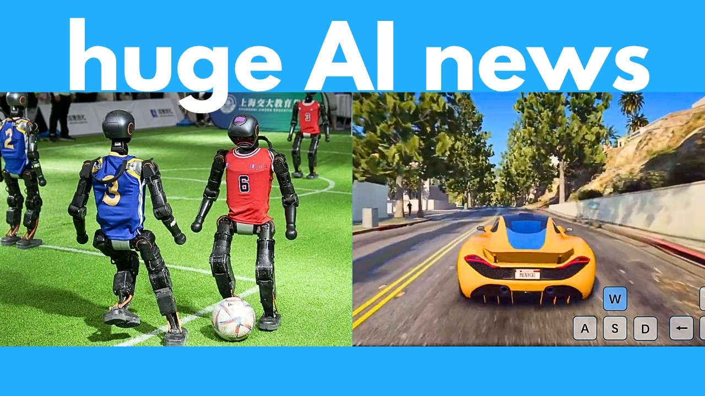

【本周AI新闻 20250704 新AI可生成任意游戏、解码DNA、机器人足球赛、3D模型动画师、新型AI音乐生成器】
Summary: This week's AI breakthroughs include tools for 3D model animation, open-source music generation, autonomous robot soccer, DNA analysis, and interactive game creation.
摘要： 本周AI突破包括3D模型动画工具、开源音乐生成器、自主机器人足球赛、DNA分析技术和交互式游戏生成器。

⏱️ Estimated Reading Time: 67 min
📚 四级生词 📚 六级生词 📚 雅思生词 📚 托福生词 📚 专八生词 📚 SAT生词 📚 考研生词 📚 GRE生词 📚 高考生词 📚 其它生词生词
AI never sleeps, and this week has been absolutely insane!
AI永不眠，这周简直疯狂！
We have an AI that can animate 3D models with just a text prompt, and it can be any object, not just a human character.
我们有了仅需文本提示就能为3D模型制作动画的AI，且适用于任何物体，不仅限于人物角色。
We have a new open source GPT-40 image editor, which was actually trained on images from GPT-40.
我们推出了新的开源GPT-40图像编辑器，其训练数据直接来自GPT-40生成的图像。
We have a new open source AI music generator that can create full songs.
我们有了能创作完整歌曲的新型开源AI音乐生成器。
This AI can create interactive 3D worlds like a video game, and this is the best quality one we've seen so far.
这款AI能生成类似电子游戏的交互式3D世界，是目前我们见过质量最高的版本。
We had the first ever humanoid robot soccer tournament, and this is completely autonomous.
我们举办了史上首次人形机器人足球赛，全程完全自主运行。
There weren't any humans remotely controlling these robots.
没有任何人类在远程操控这些机器人。
Google releases an insane AI for understanding DNA.
谷歌发布了用于解析DNA的超级AI。
Hunyuan releases a tiny open source model that's as good as DeepSeek and OpenAI's O1.
混元发布了小巧的开源模型，性能媲美DeepSeek和OpenAI的O1。
This AI can create 3D panoramic images and a lot more, so let's jump right in.
这款AI能创建3D全景图像等功能，让我们立即深入了解。
First up, this AI is pretty interesting.
首先介绍这款非常有趣的AI。
It's called Vmem, and this is a video generator that can create 3D worlds that are consistent.
它叫Vmem，是能生成连贯3D世界的视频生成器。
Now I featured a ton of these 3D world generators on my channel before, but for almost all of them they don't actually remember the scene.
我的频道曾介绍过许多3D世界生成器，但绝大多数都无法记住场景。
In other words, as you can see from this video in the middle, if you walk forward in the 3D world for a few steps and then walk back again, the scene could be completely different because it doesn't actually remember the scene from before.
如图所示，若在3D世界中前进几步再折返，场景可能完全不同，因其并未真正记忆先前画面。
But this new AI Vmem is able to solve this problem.
但新AI Vmem成功解决了这个问题。
So this takes in an input image to use as the first frame.
它以输入图像作为首帧。
Plus you can also control for how you want the camera to move in the scene by specifying key presses.
还能通过按键指定摄像机移动轨迹。
From that, it would generate a video moving through the scene.
由此生成穿越场景的视频。
And even if you walk backwards, everything remains consistent with the previous frames.
即使后退，所有内容仍与先前帧保持连贯。
So here's yet another example.
再看另一个例子。
Notice that without this Vmem, then the AI doesn't actually remember what was in the previous frame.
可见没有Vmem时，AI无法记住前帧内容。
So it could not get these Chinese signs correct.
导致其中文标志显示错误。
But after Vmem, it's able to remember what the scene actually looked like and regenerate it pretty well.
而Vmem能准确记忆场景原貌并高质量重建。
Here is yet another example.
再看另一示例。
So notice that if we pan to the right and then pan back left, Vmem was able to accurately recreate this temple in the original image.
当镜头右移再左扫时，Vmem能精确重建图像中的寺庙原貌。
Whereas if we don't have Vmem, then it totally messes up the scene.
若无Vmem，场景就会完全错乱。
Really quickly, here's the architecture behind it.
快速介绍其架构：
So they used a special type of memory called Surfl-based memory, which basically stores past video frames and their corresponding 3D geometry.
采用Surfl-based记忆系统，存储历史视频帧及其3D几何数据。
This memory is used to generate new frames that are consistent with the past frames.
该记忆库用于生成与历史帧连贯的新帧。
It's like the AI remembers the entire scene.
如同AI记住了整个场景。
So if we decide to move back to a previous angle or perspective, it's able to recreate that very well.
因此当返回旧视角时，能完美重现场景。
Anyways, if you scroll up to the top of the page, they've actually released a free hugging face space for you to try this out online.
官网已发布免费Hugging Face空间供在线体验。
So you can upload an image to use as the starting frame or choose from one of their examples.
可上传起始帧图像或选用示例素材。
So let's try this living room.
以这个客厅为例。
And then over here is where you can select how to move in the 3D scene.
此处可选择3D场景中的移动方式。
Let's get it severe to the left for 20 degrees.
设定向左偏转20度。
And here is our result.
生成结果如下。
So note that it only generates five frames like this.
注意目前仅生成五帧。
But you can always repeat this step again and again to generate a longer video.
但可重复操作生成更长视频。
In addition to the hugging face space, they've also released the models and all the code for you to use locally.
除Hugging Face空间外，还开源了模型和本地运行代码。
So if you click on this GitHub repo, it contains all the instructions on how to download and run this locally on your computer.
GitHub仓库包含完整本地部署指南。
So if you're interested in reading further, I'll link to this main page in the description below.
详情链接见视频描述区。
Next up, this AI is pretty fascinating.
接下来介绍这款惊艳的AI。
It's called Dimension Reduction Attack or DRA for short.
全称Dimension Reduction Attack（简称DRA）。
And this can edit or create images not using an image generator, but a video generator, out of all things.
其特别之处在于：它使用视频生成器（而非图像生成器）来编辑/创建图像。
And apparently using a video model can be quite effective for a variety of tasks including colorization, sharpening, and deblurring.
事实证明视频模型在着色、锐化和去模糊等任务中效果卓越。
So here are some examples.
示例如下：
First of all, if this is your input image, you can plug it through this video model to actually deblur the image.
输入模糊图像后，通过该视频模型可实现去模糊。
So after entering your text prompt and running this for a few steps, notice that it's able deblur this image very well.
输入文本提示并运行数步后，可见去模糊效果极佳。
Or here are some more examples.
更多案例：
On the left is the original super blurry image, but after plugging it through this AI for many steps, notice that it's able to deblur and sharpen this very well.
左侧超模糊原图经AI多步处理后，去模糊和锐化效果显著。
Here are some additional examples.
另一些示例：
It's pretty impressive how it was able to sharpen and add so much more detail to this, given that the original image is so blurry.
原图如此模糊却能锐化并增添细节，令人惊叹。
Now instead of sharpening or deblurring an image, this can also colorize a black and white image.
除锐化和去模糊外，还能为黑白图像着色。
So here we have the starting image.
这是初始图像。
This is completely black and white.
纯黑白画面。
But after entering a prompt describing how you want to color this and plugging it through the AI, notice that it's able to colorize this very well.
输入着色描述提示后，AI呈现出色着色效果。
Or here's another example where on the left is the starting image, which is completely grayscale, but it's able to add color to this super accurately according to how you describe it in the prompt.
另一案例中，左侧灰度图能根据提示精确着色。
Now in addition to deblurring and colorizing an image, this can also act as a control net.
除上述功能外，它还能作为控制网络使用。
So you can input something like a depth map and then with a prompt, you can get it to generate the complete image based on this depth.
例如输入深度图，配合提示语即可生成完整图像。
So here are some examples.
示例如下：
You can see after multiple steps, it's able to generate the final colored image very well based on the original depth map.
经多步处理，能基于原始深度图生成优质彩色图像。
Or here are some more examples.
更多案例：
After plugging it through this AI and running it for multiple steps, it's able to generate a complete image based on the depth and your prompt.
通过AI多步处理，可根据深度图和提示生成完整图像。
Now instead of inputting a depth map and getting it to generate a complete image, you can do the reverse.
除根据深度图生成图像外，还能逆向操作。
So you can start with a complete image and get it to generate a depth map of the image like this.
即从完整图像生成深度图。
Very cool.
非常酷。
Or here are some more examples.
更多示例：
This can also handle inpainting and outpainting.
还支持修复和扩展绘画。
So let's say you have this starting image where a part of it is removed.
假设原始图像有部分缺失。
Well you can plug it through this AI and with a prompt describe how you want to fill in the blanks.
通过AI并输入填充描述即可补全。
And here is what you get.
效果如下。
So this is a super versatile and flexible image editor, even though technically this is a video model.
因此这是极其多能的图像编辑器（尽管技术上是视频模型）。
Now instead of inpainting, you can also outpaint or basically extend the edge of a photo.
除修复外，还能扩展图像边缘。
So let's say you're starting with the image on the left.
以左侧图像为例。
Well you can describe how you want to extend this and after running it through this AI for several steps, here is what we get.
描述扩展需求并经AI多步处理后，得到右图效果。
Notice that it's able to preserve the original style of the image.
可见其完美保留了原图风格。
You can also use this to change the image to another style.
还能转换图像风格。
So let's say for your prompt, you input bitmoji style and on the left is the input image.
例如输入"Bitmoji风格"提示，左侧为原图。
After running it through a few steps, notice that it converts the image into something like this.
经几步处理后，图像转换为右图样式。
You can also use this for reference to image.
也支持图像参考功能。
So let's say you input an image of an object or character.
输入物体或角色图像后，
You can basically take that object and apply it somewhere else.
可将其元素应用到其他场景。
For example, you can swap the background or get the character to do something else.
例如替换背景或改变角色动作。
The nice thing is if you scroll up to the top of the page, they've released everything already.
最棒的是官网已开源全部资源。
Plus they also have a free hugging face space for you to try this out online.
还提供免费Hugging Face空间供在线体验。
So here's what the interface looks like.
界面如图所示：
You can choose from a ton of these different options.
提供多种功能选项。
So for example, I'm going to upload this black and white family photo and I'm going to choose colorization.
以上传黑白全家福并选择着色功能为例。
And then for the target prompt, I'm just going to put a family photo.
目标提示简单输入"全家福"。
Now you could specify even more details.
当然可添加更详细描述，
So for example, the color of all their outfits.
如每位成员的服装颜色。
But for here, I'm just going to leave the creativity to it.
但此处交由AI自由发挥。
And then down here, this is basically the number of steps you want it to go through before outputting your final image.
此处设置生成最终图像所需的处理步数。
Let's just leave it at the default of 50.
保留默认50步。
All right.
开始处理。
And here's what we get.
生成效果如下：
So if we keep scrolling down, you can see it applying the colorization step after step.
向下滚动可见逐步着色过程。
And after applying this for a ton of steps, you can see that the photo gradually becomes more colored.
经多步处理后，照片逐渐呈现彩色效果。
Anyways, there are a ton of different things you can do with this.
该工具功能极其丰富，
So feel free to play around with this free hugging face space.
欢迎体验免费Hugging Face空间。
Also, if you click on this GitHub repo, this contains all the instructions on how you can install this and run it locally on your computer.
GitHub仓库包含本地安装运行指南。
So if you're interested in reading further, I'll link to this main page in the description below.
详情链接见视频描述区。
Next up, this AI is super useful.
接下来介绍这款实用AI。
It's called AnimaX, and this can animate 3D models with just a text prompt.
名为AnimaX，仅需文本提示即可为3D模型制作动画。
Note that this does require that you input an articulated 3D mesh.
需输入带关节的3D网格模型。
This is basically an existing 3D model with a defined skeleton and joints.
即已定义骨骼和关节的现有3D模型。
Then you would input your text prompt like the boy jumps, and that's exactly what it does.
输入如"男孩跳跃"的提示后，AI即生成对应动画。
It generates a video of the model moving according to your prompt.
根据提示生成模型运动视频。
So here are some more examples.
更多示例：
So this is quite a versatile tool.
这是款多功能工具。
Note that the entire animation is 3D because you're inputting a 3D model.
注意：由于输入是3D模型，整个动画保持3D属性。
So if you get the laptop to close, here is what you get.
例如生成"合上笔记本"动画效果如下。
And you can view this at different angles.
支持多角度查看。
Or here's a flag animation.
这是旗帜动画示例。
And as you can see, it's moving pretty realistically as if it's actually being blown by the wind.
可见其运动逼真如受风吹拂。
And as you can see, this also works for different animals.
同样适用于各种动物模型。
Again, note that you do need to input an articulated mesh first, which is an existing 3D model that already has the joints and the skeleton defined.
再次强调需先输入已定义关节和骨骼的3D模型。
So the AI knows how to move the model.
AI据此知晓如何驱动模型。
And then here are some other characters for your reference.
其他角色参考示例：
Note that it can even do more complex movements such as punching or even kicking.
甚至能完成出拳、踢腿等复杂动作。
So traditionally, if you want to animate a 3D model, you need to do a lot of complex stuff to define the overall movement.
传统3D模型动画需复杂操作定义整体运动。
But with this, you can just prompt it and it would animate a 3D model very accurately in just a few seconds.
而此工具仅需提示即可在数秒内生成精确动画。
Really quickly, here's how it works.
快速说明其原理：
So you would input your articulated 3D mesh plus a prompt describing the action.
输入带关节3D网格和动作描述提示后，
And actually, it first generates a video and then extracts the pose sequences from the video like this, right?
AI首先生成视频，再从中提取姿势序列。
So it actually generates a video of this boy jumping and then it extracts the skeleton of his jumping frame by frame.
即先生成男孩跳跃视频，再逐帧提取骨骼动作。
It then uses this sequence of pose skeletons to animate the underlying 3D model.
最后用此姿势序列驱动基础3D模型。
A pretty clever workflow.
非常聪明的工作流程。
Now, if you scroll up to the top of the page, they have released a GitHub repo.
官网已发布GitHub仓库。
And on it, there is a checklist for them to release the code and the model plus the training data set, which is fantastic.
包含代码、模型及训练数据集的发布计划表。
Anyways, for now, if you're interested in reading further, I'll link to this main page in the description below.
详情链接见视频描述区。
Again, note that this tool requires an existing articulated 3D mesh.
再次提醒：该工具需要现成的带关节3D网格。
So the 3D model needs to have its joints defined already.
即3D模型需预定义关节。
So that's not really easy to work with.
这提高了使用门槛。
What if you just have a 3D model with no predefined joints and you want to animate that?
如果你的3D模型没有预设关节却需要动画效果怎么办？
Well, this brings us to this next AI, which is even better.
这款全新AI工具将带来更优解决方案。
So this is called Animate Any Mesh and it can animate any 3D model just with a text prompt.
"Animate Any Mesh"可通过文本提示为任意3D模型添加动画。
You don't need to have any predefined joints.
完全不需要预设关节。
So here are some examples.
以下是应用示例。
You can take a 3D model like this and then prompt it with the girl is dancing.
输入"女孩在跳舞"的提示词。
And here is what you get.
即可获得这样的效果。
Note that it can create very smooth and realistic animations in just a few seconds.
仅需数秒就能生成流畅逼真的动画。
Here's an example where we animate this model of link.
这是林克模型的动画效果。
So this AI can automatically detect, you know, its joints, you can say, and determine how it should move the character.
AI能自动检测关节并决定角色运动方式。
Here's another even trickier example.
这个案例更具挑战性。
It's not really a regular character.
目标并非标准角色模型。
This is a jack in the box with a spring coil, but it's able to detect this and animate it really realistically.
内置弹簧的玩偶盒也能被准确识别并生成逼真动画。
So everything is physically accurate.
所有动作都符合物理规律。
Here's another example.
再看这个案例。
So we can also get this dragon to flap its wings like this.
让这条龙实现翅膀拍打动作。
Here is a pot of flowers.
这是一盆花的模型。
I mean, how the hell do you even animate a pot of flowers?
花朵盆栽如何添加动画？
But as you can see, this AI was able to pull it off very well.
但AI交出了完美答卷。
Here's another example of a different character.
另一个角色动画示例。
And note that it really doesn't matter what object or character you input.
无论输入何种物体或角色都能适用。
This AI is able to magically detect what it is and animate it really realistically.
AI能智能识别物体类型并生成逼真动画。
So here are some more examples for your reference.
更多参考案例展示。
Even with abstract things like I don't even know what the hell this is, or an entire scene like this, or even this shirt, it's able to animate these very well.
抽象物体、复杂场景乃至衣物都能完美动画化。
Now, in case you're interested in the technical details, the key component behind the magic is this DieMesh VAE, which basically helps compress and reconstruct these 3D animations.
核心技术在于DieMesh VAE架构，可压缩重建3D动画数据。
And then it goes through this text-to-trajectory model, which uses what they call a rectified flow-based strategy to make sure the animations are smooth and realistic.
文本-轨迹模型采用整流流技术确保动画流畅真实。
Now, if you scroll up to the top of the page, they have released a GitHub repo, and on it, it says they will release the code and the data set as soon as possible.
GitHub仓库即将开源代码和数据集。
So stay tuned for updates.
敬请期待更新。
For now, I'll link to this main page in the description below if you want to check out more examples.
详情页链接见视频描述区。
Speaking of AI tools, check out today's sponsor, Wejic.
本期赞助商Wejic值得关注。
It's the world's first AI website team that auto-optimizes your site with data and auto-integrates payments.
全球首个能自动优化网站并集成支付系统的AI建站工具。
So what makes this stand out?
其突出优势在于：
Overall, it helps anyone transform ideas into income fast and easy.
快速将创意转化为收益。
If you want to build a website, you can just chat with it in any language, and it would create and launch the site in just one click.
支持多语言对话式建站，一键发布。
Your website will go from zero to live, and it only takes like 60 seconds.
60秒极速上线网站。
Note that this is completely responsive, and it looks great on mobile screens.
全响应式设计，移动端体验优异。
And if you want to make your site more interactive and user-friendly, you can also use their AI form.
AI表单功能提升交互体验。
Instead of filling out a boring form, visitors can just chat with the AI to leave information.
访客可通过对话提交信息。
You can use it for a contact us section or booking or collaboration requests.
适用于联系表单、预约系统等场景。
And here's the impressive part.
最令人惊叹的是：
Wejic analyzes how visitors interact with your site and then automatically improves the layout over time.
基于访客行为自动优化网站布局。
It's like your site evolves and gets better without you lifting a finger.
网站自主进化无需人工干预。
You can even add an AI-powered chatbot for a more user-friendly and interactive experience.
内置AI聊天机器人提升交互性。
And if you need to accept payment, just chat with Wejic, and it will automatically add an AI payment system to your website.
对话即可集成AI支付系统。
Visitors can place orders right away, making it easy to start monetizing immediately.
即时开通变现功能。
And the final and best part?
最大亮点在于：
Wejic now offers a free plan for one-site publish and some free trial credits.
提供免费版及试用额度。
Check out Wejic today in the description below.
详情见视频描述区。
Next up, we have a new open-source AI music generator.
接下来介绍开源AI音乐生成器。
So this is called Songbloom, and this can generate full songs complete with vocals and instrumentals.
"Songbloom"可生成带人声和伴奏的完整歌曲。
So here are a few examples.
试听示例展示。
Here's what it does.
其工作原理是：
You first input the lyrics, which you want it to sing, plus you also need to input like a few seconds of a reference audio.
输入歌词和数秒参考音频。
And then this AI is basically going to create a new song with these lyrics in the style of your reference clip.
AI会根据参考音频风格生成新歌。
So for example, let's play this reference clip.
试听参考音频片段。
Note that after I post this to YouTube, some of these reference clips might be muted due to copyright issues.
部分参考音频可能因版权问题被静音。
So that's the reference clip, and then here's the generated song in that style.
这是生成后的同风格歌曲。
Very nice.
效果出色。
Notice that it fully clones the voice of the original reference clip.
完美克隆原声线特征。
Plus the style is really similar.
音乐风格高度一致。
Also note that the tune in the intro is also the same as the instrumental over here.
前奏旋律与伴奏完美契合。
So it seems like it can maintain consistency throughout the song.
全曲保持风格统一性。
Notice that as with the other music generators, you can also add tags throughout your prompt like intro, verse, chorus, and instrumental to give the AI more direction on how to structure the song.
支持添加intro/verse等标签指导歌曲结构。
Here's another example.
另一个示例展示。
So here are the lyrics and here is the reference clip.
这是歌词与参考音频。
Alright, hopefully none of these are muted so you can actually hear the reference clip.
希望参考音频未被静音。
But anyways, here is the AI generated song.
这是AI生成的歌曲。
Very nice.
效果惊艳。
Again, notice that it 100% clones the voice of this original clip and gets him to sing this new song.
百分百还原原声演唱新歌。
Even though this reference clip is only like 10 seconds long, that's all it needed.
仅需10秒参考音频即可。
So it's super impressive at voice cloning.
声音克隆能力惊人。
Plus the style is also beautiful and the music sounds pretty clean.
音乐风格优美且干净。
Notice that again the tune in this original intro is exactly the same as the instrumental in the middle here.
前奏与间奏旋律完美呼应。
So it's pretty good at maintaining consistency.
保持高度一致性。
I mean with this AI you can potentially just plug 10 seconds of a Taylor Swift song and get it to generate Taylor Swift singing a completely new song.
理论上可用10秒泰勒·斯威夫特音频生成全新歌曲。
Anyways, there are a ton of examples on this page so in the interest of time, I'm not gonna go over all of them but note that in addition to English songs, this can also support other languages like Chinese.
支持中文等多语种歌曲生成。
So let's just play one example.
试听中文示例。
Here is the reference clip.
这是参考音频。
Okay and then here is the AI generation based on this reference clip.
这是生成的对应歌曲。
Alright, so as you can see it sounds really similar to the reference clip and this does sound like a normal you know Chinese pop song.
效果酷似参考音频，标准华语流行曲风。
Anyways, if you scroll up to the top of the page, they've already released a GitHub repo which if you scroll down a bit contains all the instructions on how you can download and run this locally on your computer.
GitHub仓库提供本地部署指南。
And if you've been following my channel, you'll note that I featured some other free and open source music generators before such as Yue and Step Audio.
此前介绍过Yue等开源音乐生成器。
Both of these are also pretty good and you can also input lyrics and generate a complete song from that.
同样支持歌词输入生成完整歌曲。
If you're interested, see this video and this video where I go over how to install these on your computer.
安装教程见往期视频。
However, note that for all of these open source tools including Songbloom, the quality just isn't as good as the top commercial models out there like Sunoo or Udiio or Refusion.
但开源工具音质暂不及Suno等商业产品。
Those are still a lot better and they sound a lot cleaner.
商业模型音质更纯净。
But we are getting there.
开源模型正在追赶。
Hopefully in a few months, open source will catch up to these commercial models and we can generate full songs that are actually good quality completely offline.
期待数月后能离线生成高品质歌曲。
Anyways, if you're interested in reading further and listening to more examples, I'll link to this main page in the description below.
更多示例见描述区链接。
Next up, this is super impressive.
接下来这个令人震撼。
So this is called Hunyuan Gamecraft by the one and only Tencent Hunyuan, which also released one of the best video generators out there and 3D model generators.
腾讯混元推出的"Hunyuan Gamecraft"游戏生成器。
Anyways, back to Hunyuan Gamecraft, this can generate interactive game videos with high quality graphics and realistic movements.
可生成高画质、逼真动作的交互式游戏视频。
So this takes an input image to use as the first frame of the scene, plus a text prompt describing the scene.
输入场景首帧图像和文本描述。
You would also feed it key presses and the AI would animate the scene based on these controls.
通过按键控制场景演变。
Then you can take the last frame of that generation and plug it back as the input and rinse and repeat and what you get is a continuous long video.
循环生成形成连续长视频。
You can iterate through this as many times as you want.
支持无限次迭代。
So here are some more examples.
更多示例展示。
Here is the text prompt.
这是文本提示词。
On the bottom right, you can see the keys that are being pressed.
右下角显示按键操作。
Note that this AI is able to respond and change the view based on these key presses.
AI根据按键实时调整视角。
And you know, the quality of this generation is actually pretty good with other alternatives I featured on my channel before.
画质优于以往介绍过的同类工具。
As you can see, this type of AI can potentially be used to generate video games in the future.
预示未来AI生成完整游戏的潜力。
Perhaps we no longer will have any video games with predefined worlds or designs or characters.
可能不再需要预设游戏世界。
Instead, you can just prompt an AI and it would generate everything on the fly.
实时生成所有游戏元素。
Now, I featured a ton of similar game generators before, such as Google's Game Engine, which can generate a real-time playable simulation of Doom and also Microsoft's Diamond, which can generate a simulation of Counter-Strike.
此前介绍的谷歌/微软游戏生成器。
However, note that the quality of the generations from Hunyuan Gamecraft are just a lot better.
但混元生成质量明显更优。
Like this is getting close to a AAA quality video game.
接近3A级游戏水准。
Now, the nice thing about Gamecraft is this can also remember the scene.
独特优势在于场景记忆功能。
So even if you walk forward or somewhere else and then you go back to the original location, Gamecraft is able to preserve this original scene information.
返回初始位置时场景保持一致。
Whereas for other 3D world generators, they often don't actually remember the scene.
普通3D生成器缺乏场景记忆。
So if you walk backwards, it could generate a completely different thing compared to what was there before.
回退时可能生成全新场景。
And note that for here, it can also generate scenes in various styles, including realistic and pixelated or kind of this artsy pastel style.
支持写实/像素/艺术等多种风格。
Now, in addition to first-person scenes where you are the viewer, Gamecraft is also able to generate third-person scenes where you are viewing the player from behind.
兼容第一人称和第三人称视角。
So here are some examples of that.
第三人称示例展示。
And this can handle all sorts of scenarios, including driving, or this like first-person shooter game, to a warrior riding a horse, or to this sailboat.
支持驾驶/射击/骑马/帆船等多元场景。
Whereas several other AI game generators are only fine-tuned on a specific game.
而其他AI工具仅限特定游戏类型。
So they can only generate that game.
生成内容单一。
For this one, it can generate everything under the sun.
混元可实现全场景生成。
And note that it doesn't even have to be first-person or third-person.
不局限于特定视角。
And it doesn't have to just generate video game scenes.
不仅限于游戏场景。
This is essentially a video generator.
本质上是视频生成器。
So you can generate any types of videos while controlling for how you want the camera to move in the video, just by specifying the key presses.
通过按键控制镜头运动。
So this is a super powerful and flexible tool.
功能强大且灵活的工具。
Now, if you scroll up to the top of the page, for now, they've only released a technical paper.
目前仅发布技术论文。
However, Hunyuan is known to open source most of their stuff, including Hunyuan, which is the video generator, and Hunyuan 3D, which is one of the best 3D model generators out there.
混元系列产品多会开源。
So hopefully, they are also going to release Hunyuan Gamecraft soon.
期待尽快开源游戏生成器。
This tool would be a game changer for video game design and creation.
将彻底改变游戏设计流程。
Anyways, for now, if you're interested in reading further, I'll link to this main page in the description below.
技术论文链接见描述区。
Now, this isn't the only thing that Tencent Hunyuan is working on.
腾讯混元还有新成果。
So not only did they release this interactive video game generator, but they've also released a new open source model called Hunyuan A13B.
开源混合专家模型Hunyuan A13B。
Now, this is a mixture of experts model.
采用专家混合架构。
So think of this as like a team of AI agents working together to help you solve a problem.
如同AI专家团队协同工作。
Now, this model features a total of 80 billion parameters, but only 13 billion of these are active when you use it.
总参数量800亿，激活量130亿。
So this makes it super efficient while being able to perform as well as much larger models.
高效媲美大模型。
In fact, here are some benchmark scores across a variety of different topics, including math, science, coding, reasoning, instruction following, etc.
数学/编程等多项基准测试表现。
And then this last column is this new Hunyuan A13B.
最后一列为A13B成绩。
I wish they would bold the value that is the highest so that it's easier to find which model is the best performer.
希望他们能加粗最高数值以便快速识别最佳模型。
But anyways, from just a ballpark scan of this, you can see that Hunyuan A13B performs just as good as DeepSeek R1 or OpenAI's O1.
但粗略扫描可见混元A13B表现媲美DeepSeek R1和OpenAI O1。
This is super impressive considering it only has 13 billion active parameters, whereas these guys have hundreds of billions of parameters.
仅130亿活跃参数就能达到千亿参数模型水平令人惊叹。
Now, you can use this for free online right now.
现在即可免费在线使用。
So simply click on this demo link to go to their Hunyuan online platform.
点击演示链接即可进入混元在线平台。
Now, this is in Chinese, but if you're using Google Chrome, you can just right click and click on translate to English.
界面为中文，但谷歌浏览器用户可右键翻译成英文。
Now, they have a few different settings which you might be familiar with.
平台提供多项可调节设置。
If you toggle this on, it will basically search the web and find you the most up-to-date information.
开启此选项可联网获取最新信息。
They also have this think fast feature, which basically gets it to respond faster if your task doesn't really require deep reasoning.
"快速思考"功能可加速响应无需深度推理的任务。
If you are trying to get it to solve a really complex math, science, or coding problem, then you can turn this off to get it to think for longer.
处理复杂数学/科学/编程问题时建议关闭该功能以延长思考时间。
And then under here, it also has this DeepSearch capability, which is very similar to other DeepSearch agents like OpenAI's DeepResearch and Gemini DeepResearch.
DeepSearch功能类似OpenAI和Gemini的深度研究代理。
So let's try this prompt.
现在测试这个提示词。
A 21-year-old college student comes to the clinic with sharp chest pain that worsens with deep breathing and improves when sitting forward.
"21岁大学生因深呼吸加重的锐利胸痛就诊，前倾坐位可缓解"。
He recently had a cold, etc., etc.
近期有感冒史等。
Vitals are stable and the ECG shows, etc., etc.
生命体征稳定，心电图显示...
Please diagnose.
请诊断。
Let's press generate and see what that gives us.
点击生成查看结果。
So with most thinking models, you can see its thought process over here.
多数思考模型会在此显示推理过程。
So first, it's taking all the symptoms and figuring out the most probable explanation.
首先整合症状寻找最可能解释。
And then it says, that makes me think of pericarditis, which has these symptoms.
随后提示"考虑心包炎，因其符合这些症状"。
And then next, it looks at the ECG findings and also reinforces that it's likely pericarditis.
接着分析心电图结果进一步支持心包炎判断。
It also thinks about other possibilities such as STEMI or myocarditis.
同时考虑STEMI或心肌炎等其他可能。
But that's more associated with, etc., etc.
但更符合...等情况。
So it concludes that pericarditis fits better with the given symptoms.
最终判定心包炎最符合现有症状。
And then the patient is young, which is also a common age for pericarditis.
患者年轻也符合心包炎好发年龄。
Anyways, afterwards, it gives us the diagnosis with some key clinical clues.
最终给出诊断及关键临床依据。
And also it explains why it excluded other possibilities.
并解释排除其他可能性的原因。
And then here is the conclusion.
以下是结论。
So that's just one example of using Hunyuan A13b.
此为混元A13B的应用案例之一。
Again, this is completely open source and it's just as good as DeepSeq R1 or OpenAI's O1.
该模型完全开源且性能比肩DeepSeq R1和OpenAI O1。
On this GitHub repo, it contains all the instructions on how you can download and use this locally on your computer.
GitHub仓库包含本地部署完整指南。
Anyways, if you're interested in learning more, I'll link to this main page in the description below.
详情请见视频描述区链接。
Next up, this AI is pretty useful.
接下来介绍实用AI工具。
So it's called DreamCube and this can create 3D panoramic images with depth.
DreamCube可生成带深度信息的3D全景图像。
So this takes in one image of a scene plus its corresponding depth map.
输入场景图像及对应深度图即可。
And you would specify what else is around the scene using a text prompt.
通过文本提示描述场景周边环境。
So for example, here you can specify that there will be a dining room with a window and curtains.
例如指定"带窗户窗帘的餐厅"。
And then there's also a room with a bed, desk and pictures on a wall, etc.
或"配备床、书桌和墙面挂画的房间"。
And then it would use a diffusion model to basically generate what is called a cube map of the scene based on your text description.
扩散模型将根据文本生成立方体贴图场景。
And then afterwards, you can also stitch this cube map together to create a 3D scene, which you can explore around like this.
可拼接成立方体创建可探索的3D场景。
So here are some more demos.
更多演示案例。
Let's say you input this image of this castle and here is the corresponding depth map.
输入城堡图像及对应深度图。
Well, you can plug it into this AI and then it would generate a 3D panoramic scene from that, which you can then explore around like this.
AI将生成可自由探索的3D全景场景。
How cool is that?
效果惊艳！
So, you know, this tech could be very useful for virtual reality or other immersive experiences.
该技术适用于VR等沉浸式体验。
Or instead of garden, let's say you input this kitchen scene.
输入厨房场景替代花园。
Well, it can generate a panoramic image from that, which you can explore around.
同样能生成可探索全景图。
And here is what you get.
生成效果如下。
Notice everything is very detailed and coherent.
细节丰富且连贯。
Or here's an example of another kitchen.
另一厨房案例。
And here is what you get.
生成效果。
You know, this would be a perfect tool for like VR tours for real estate or like interior design.
堪称房产VR导览和室内设计的完美工具。
Here's an example of a room.
房间案例展示。
Here's the original image and the original depth map.
原始图像与深度图。
And if you move around the scene, here is what you get.
场景环视效果。
Very nice.
非常出色。
Or here's an example of a bedroom.
卧室案例。
And here is the resulting panoramic image.
生成的全景图像。
Anyways, if you scroll up to the top of the page, they've already released the models on Hugging Face.
模型已发布在Hugging Face平台。
Plus, if you click on this GitHub repo, it contains all the instructions on how to download and run this locally on your computer.
GitHub仓库含本地运行完整指南。
The nice thing is it uses a nice visual Gradio interface, so you don't have to work with raw code.
采用Gradio可视化界面无需处理原始代码。
Anyways, if you're interested in reading further, I'll link to this main page in the description below.
详情见视频描述区链接。
Next up, we have a new open source AI called LongWriter Zero.
接下来介绍开源AI工具LongWriter Zero。
And this can generate really long text like stories and articles from just a prompt.
仅需提示词即可生成超长故事或文章。
Now, we have a ton of models that can already do this, but the difference here is this can generate coherent text that's over 10,000 tokens, which is roughly 75,000 words.
现有模型虽多，但该工具能生成超1万token（约7.5万字）的连贯文本。
For the other leading AI models, if you try to get it to generate such long text, then usually the details aren't really consistent from start to end.
其他主流AI生成超长文本时通常难以保持前后一致性。
Note that this is a fine tune of Quen 2.532b, which is an open source model by Alibaba.
该模型基于阿里巴巴开源模型Quen 2.532b微调。
Now, this is just a medium sized model with only 32 billion parameters, which is pretty small.
仅320亿参数的中等规模模型。
But as you can see from the ELO score of these writing bench and arena write benchmarks, LongWriter Zero even beats the best closed source models out there, like GPT-40 or O1 or Claude SONET 4, as well as DeepSeq R1.
但写作基准测试显示其表现优于GPT-40、O1、Claude SONET 4及DeepSeq R1等闭源模型。
And each of these are at least hundreds of billions of parameters.
而这些模型均具备数千亿参数。
So the fact that this LongWriter Zero is only 32 billion parameters is super impressive.
320亿参数达成此效果令人惊叹。
Here are some other metrics.
其他指标展示。
So for each pie chart, the section in blue is basically the percentage of times a human preferred the response of LongWriter Zero compared to another AI model.
饼图蓝色区域显示人类评估者偏好LongWriter Zero输出的比例。
So as you can see from all of these pie charts against all these different models, including Claude SONET 4, Gemini 2.5 Pro, and DeepSeq R1, you can see that LongWriter Zero is preferred over half the time.
与Claude SONET 4、Gemini 2.5 Pro及DeepSeq R1对比中，LongWriter Zero偏好率均超半数。
So if you're looking to write really long text that's coherent, then LongWriter Zero is currently your best option.
若需生成超长连贯文本，目前该工具是最佳选择。
And really quickly, here's how it works and how they trained it.
快速说明其工作原理与训练方式。
So they pre-trained it on 30 billion tokens of like long form books and technical reports.
基于300亿token的长篇书籍与技术报告预训练。
This is basically a ton of data.
数据量极为庞大。
They then fine-tuned this further using reinforcement learning with three reward models.
通过三个奖励模型进行强化学习微调。
The first one is called length reward model, which makes sure the output is long enough.
"长度奖励"确保输出足够长。
So it's rewarded if it outputs a long answer.
生成长文本会获得奖励。
It also has a writing reward model, which scores its fluency, coherence, and helpfulness.
"写作奖励"评估流畅性、连贯性与实用性。
Again, the AI model gets a higher reward if it was able to generate a result that's fluent and coherent and helpful.
生成流畅、连贯且有用的结果将获更高奖励。
It also has this format reward, which helps keep its responses structured.
"格式奖励"保持回答结构化。
So the AI is incentivized to output structured outputs like this and also avoid repeating content.
激励模型输出结构化内容并避免重复。
And as with all of the top thinking models out there, LongWriter Zero was also prompted to explicitly reflect before answering.
与顶级思考模型类似，要求其在回答前进行显式反思。
So this encourages deep thinking, which allowed it to output better responses.
促进深度思考以输出更优回答。
Anyways, the models are all open source and out already.
模型已完全开源。
So on this page, it gives you all the instructions on how to download this and run it locally on your computer.
页面提供本地部署完整指南。
If you're interested, I'll link to this main page in the description below.
详情见视频描述区链接。
In humanoid robot news, in the past few weeks, we've had a ton of robot events, including a humanoid robot marathon and a robot kickboxing tournament, both of which I mentioned on my channel before.
人形机器人领域近期举办过马拉松和踢拳锦标赛。
Well, this week, Beijing will host the first ever autonomous humanoid robot soccer match.
本周北京将举办首届自主人形机器人足球赛。
It's going to be a team of three robots against three robots.
采用3v3赛制。
Now, this event consists of four teams, including those from Tsinghua University and Beijing Information Science and Tech University.
四支参赛队包括清华和北信科团队。
Note that here, the robots were all trained using deep reinforcement learning, and they can autonomously kick, chase, and maneuver the ball without any human guidance.
机器人通过深度强化学习训练，可自主完成踢球、追球和控球。
And this is super impressive.
表现极为惊艳。
This is way different from the kickboxing match, which we saw a few weeks ago, where all the actions of the robots were actually teleoperated.
与几周前人类远程操控的踢拳赛截然不同。
In other words, someone was controlling these robots from the sidelines.
当时需场外人员实时控制。
But here in the soccer match, no one is remotely controlling these robots.
本次足球赛完全无需远程操控。
They are all acting autonomously, and through reinforcement learning, their goal is to score the most points.
通过强化学习自主决策以争取最高得分。
Now, this is actually going to be the first test event for what they call the World Humanoid Robot Games, which is set to take place in mid-August of this year.
此为8月中旬"世界人形机器人运动会"的测试赛。
Think of it as like a Robot Olympics, which is pretty exciting.
堪称机器人版奥运会。
Anyways, that's all the information we have for now.
目前信息汇总完毕。
I'll keep you posted once we learn more about this event.
后续进展将及时更新。
Let me know in the comments below, would you be interested in watching a Robot Olympics?
欢迎留言是否期待观看机器人奥运会。
Now, in the past few weeks, Google has been on fire.
近期谷歌动作频频。
They've released a ton of game-changing products, such as VO3, which can directly generate videos with audio, as well as an AI that can self-evolve, and come up with a ton of scientific and math breakthroughs, as well as another AI that can help predict tropical cyclones, just to name a few examples.
包括带音频的视频生成工具VO3、自进化AI、科技突破AI及热带气旋预测AI等。
Well, this week, they continue to release some insane stuff.
本周继续发布重磅产品。
So here we have Alpha Genome, which is basically an AI that can help us understand DNA.
Alpha Genome助力DNA解读。
Now, here's a brief background on what DNA even is.
DNA基础知识简介。
This is basically a helix structure consisting of two strands, and each strand is basically a really long string of nucleotides, and each nucleotide can have one of four bases, G, C, A, or T.
双螺旋结构由含G/C/A/T碱基的核苷酸长链组成。
So you can think of DNA as basically just a really long string of code that are either G, C, A, or T.
可将DNA视为由G/C/A/T组成的长代码串。
Now, historically, we have no idea what most of these sequences do or what they mean, but here, Google has trained this AI called Alpha Genome to basically take a really long DNA sequence, up to one million letters, and from that, it can predict thousands of molecular properties, including details about how that DNA is used in the body.
Alpha Genome可分析百万级DNA序列并预测数千种分子特性及其生理作用。
It's especially good at analyzing non-coding regions of DNA, which make up about 98% of the DNA.
特别擅长分析占DNA98%的非编码区。
So these sections, as far as we know, don't really serve any purpose, and historically, it's been really hard to interpret what these regions even do, even though they make up like over 90% of the DNA.
这些区域功能长期未知且难以解读。
The model can also predict how even tiny changes or mutations in the DNA might affect its output or gene activity, and this can be really helpful in explaining the genetic causes of a lot of diseases.
能预测DNA微小突变对基因活性的影响，助力疾病遗传成因研究。
Alpha Genome can also spot errors in RNA splicing.
还可识别RNA剪接错误。
This is a process where RNA is cut and rejoined, and basically, in simple terms, this is important because mistakes here can also lead to diseases, such as spinal muscular atrophy and cystic fibrosis.
该过程错误可能导致脊髓性肌萎缩症和囊性纤维化等疾病。
So if we understand how this works, it can give us clues on how we can potentially cure or prevent these diseases.
理解该机制有助于疾病防治。
The nice thing is, this doesn't just work with one type of cell.
不仅适用于单一细胞类型。
So here it says Alpha Genome is able to interpret hundreds of human and mouse cell types and tissues.
这里提到Alpha Genome能够解读数百种人类和小鼠细胞类型及组织。
So you know, this is actually huge because we still don't know a lot about DNA and how it works.
这实际上非常重要，因为我们对DNA及其运作机制仍知之甚少。
But if you've been following my channel, you should know that AI models are really good at pattern recognition.
但如果你一直关注我的频道，你会知道AI模型非常擅长模式识别。
So it's really good at finding underlying patterns and relationships, even if it's really complicated.
它非常擅长发现潜在的规律和关联，即使这些规律非常复杂。
So by training this AI to interpret DNA, maybe we could uncover a ton of things that we don't know before.
通过训练这个AI解读DNA，我们或许能发现许多以前未知的事物。
And the nice thing is, this is available already.
最棒的是，它现在已经可用。
So you can access this via their Alpha Genome API for non-commercial research.
你可以通过Alpha Genome的API进行非商业研究。
And they even say that they're gonna release the model in the future.
他们还表示未来会发布这个模型。
Anyways, if you're interested in learning more, I'll link to this main page in the description below.
如果你有兴趣了解更多，我会在下方描述中附上主页链接。
In addition to Alpha Genome, Google also released Gemini CLI this week.
除了Alpha Genome，谷歌本周还发布了Gemini CLI。
This is a free and open source AI agent that works directly in your command line or terminal.
这是一个免费开源的AI代理，可直接在命令行或终端中使用。
And this makes it easier for developers to write or debug or manage code locally.
这让开发者能更轻松地本地编写、调试或管理代码。
So for example, you can just pull this up in your terminal and then ask Gemini to code things or fix bugs directly within your local folders.
例如，你可以在终端中调用Gemini，让它直接在本地文件夹中编写代码或修复错误。
Or you can even get it to create images and videos using their Imagine NVO3 MCP.
你甚至可以用它的Imagine NVO3 MCP生成图像和视频。
It's basically like an API that connects to Google's image and video generators.
它本质上是一个连接谷歌图像和视频生成器的API。
So for example, here, just by prompting it, you can get it to make a short video of a ginger cat's adventures around Australia.
例如，只需输入提示，你就能让它生成一只姜黄色猫在澳大利亚冒险的短视频。
And because this is an agent, it can automatically do the entire thing for you.
由于这是一个代理，它可以自动完成整个过程。
You don't have to prompt it scene by scene.
你无需逐场景输入提示。
So as you can see, it's actually first using Google's Imagine to generate an image of this ginger cat in various scenes in Australia.
如你所见，它首先使用谷歌的Imagine生成这只猫在澳大利亚不同场景的图像。
And then it's using VO3 to generate videos based on that image as the starting frame.
然后使用VO3以该图像为起始帧生成视频。
And it will rinse and repeat this and in the end, you'll get a full long video with multiple scenes.
它会不断重复这一过程，最终生成一个包含多个场景的长视频。
Note that again, because this is an agent, it's doing this all autonomously.
再次强调，由于这是一个代理，整个过程是全自动的。
You can do all of this just by typing a prompt in natural language.
你只需用自然语言输入提示即可完成这一切。
The nice thing is this Gemini CLI is fully open source under the Apache 2 license, which has very minimal restrictions.
最棒的是，Gemini CLI采用Apache 2许可证完全开源，限制极少。
Like you can even use this for commercial purposes.
你甚至可以将其用于商业用途。
And by default, this uses Gemini 2.5 Pro, which is Google's best model yet.
默认情况下，它使用谷歌目前最强的模型Gemini 2.5 Pro。
And you get a thousand requests per day for free.
你每天可以免费使用一千次请求。
So if you're a developer and if you want to get an AI agent on your terminal using the best AI model out there, Gemini 2.5 Pro, for free, definitely take advantage of this.
如果你是开发者，想在终端免费使用目前最强的AI模型Gemini 2.5 Pro，一定要利用这个机会。
I'm not sure if they will continue offering this for free for long.
我不确定他们是否会长期免费提供这项服务。
Now, in addition to working with an AI on your terminal, which honestly I'm not personally a fan of, you can also use their Gemini Code Assist, which is an AI assistant that lives directly in VS Code, as you can see here.
除了在终端使用AI（我个人不太喜欢这种方式），你还可以使用他们的Gemini Code Assist，这是一个直接集成在VS Code中的AI助手。
So this is essentially the same thing as Cursor or Windsurf.
它基本上与Cursor或Windsurf功能相同。
But here again, they are offering this for free.
但谷歌再次免费提供这项服务。
So, you know, if you don't want to pay for Cursor or Windsurf, you can just use this for free and it offers very similar capabilities.
如果你不想为Cursor或Windsurf付费，可以免费使用这个工具，功能非常相似。
Anyways, if you're interested in learning more, I'll link to this main page in the description below.
如果你有兴趣了解更多，我会在下方描述中附上主页链接。
Here's another update by Google.
谷歌还有另一个更新。
So they finally released Imagine 4 via the Gemini API, as well as Google's AI Studio.
他们终于通过Gemini API和谷歌AI Studio发布了Imagine 4。
Now, if you're not familiar with AI Studio, this is the all-in-one platform where you can use the best models from Google, including Gemini 2.5 Pro plus the Gemini 2.0 Image Editor.
如果你不熟悉AI Studio，这是一个一体化平台，你可以使用谷歌的最佳模型，包括Gemini 2.5 Pro和Gemini 2.0图像编辑器。
You can also talk to an AI voice in real time and even share your screen and ask it questions.
你还可以实时与AI语音对话，甚至共享屏幕并向它提问。
But this week, they've released Imagine 4, so how you can access this in AI Studio is simply click on Generate Media in this left column.
本周他们发布了Imagine 4，在AI Studio中只需点击左侧的"生成媒体"即可访问。
And here is where you can use the latest Imagine 4.
在这里你可以使用最新的Imagine 4。
So let's click on this.
让我们点击这个。
And as you can see over here is where we have Imagine 4 and Imagine 4 Ultra.
如你所见，这里有Imagine 4和Imagine 4 Ultra。
The rest of these settings are pretty self-explanatory.
其余设置都很直观。
So here's the number of results.
这是结果数量。
Here's the aspect ratio.
这是宽高比。
Let's try this out.
让我们试试看。
First, I'm going to generate a low quality amateur selfie photo.
首先，我要生成一张低质量的业余自拍照片。
Let's see what that gives us.
看看结果如何。
And here is what we get.
这就是我们得到的。
This is indeed quite a low quality amateur selfie photo.
这确实是一张质量很低的业余自拍照片。
In fact, everything looks super blurry and unpolished.
事实上，一切看起来都非常模糊且粗糙。
Next, let's try something trickier.
接下来，让我们尝试一些更复杂的内容。
So I'm going to get it to generate a four-panel comic on how to stay healthy.
我要让它生成一个关于如何保持健康的四格漫画。
For panel one, the character should drink a glass of water and there should be a text bubble with this text.
第一格中，角色应该喝一杯水，并有一个包含这段文字的对话框。
And then for panel two, the person should be walking outside with the text Move Every Day.
第二格中，人物应该在户外散步，文字是"每天运动"。
And then here is panel three with the text Eat Real Food.
第三格的文字是"吃真正的食物"。
Here is panel four with the person sleeping with the text Get Enough Sleep.
第四格中人物在睡觉，文字是"充足睡眠"。
Let's click Run and see what that gives us.
点击运行看看结果如何。
And here is what we get.
这就是我们得到的。
So as you can see, it's really good at generating text and complicated images like this with multiple elements or panels.
如你所见，它非常擅长生成文本和这种包含多个元素或格子的复杂图像。
So, you know, this is a legit competitor to GPT-40.
可以说，这是GPT-40的真正竞争对手。
Or let's try another tricky example.
或者让我们尝试另一个复杂的例子。
Here the prompt is an isometric 3D scene of a bedroom.
提示是"一个卧室的等距3D场景"。
There is a man sitting on a red chair at a wooden desk working on his laptop.
有一个男人坐在红色椅子上，在木桌前用笔记本电脑工作。
There's a white empty bookshelf.
有一个白色的空书架。
A pet cat is curled up on a gray bed with white pillows.
一只宠物猫蜷缩在灰色床上，上面有白色枕头。
Beside the bed is a nightstand with a lamp and alarm clock.
床边有一个带台灯和闹钟的床头柜。
The wall is teal.
墙壁是蓝绿色的。
There is a window with white curtains.
有一扇带白色窗帘的窗户。
There are some houseplants and an acoustic guitar hanging on the wall.
有一些室内植物和一把原声吉他挂在墙上。
Let's see if it can generate an image with all these elements.
看看它能否生成包含所有这些元素的图像。
All right, and here is what we get.
好了，这就是我们得到的。
So this is an isometric 3D scene.
这是一个等距3D场景。
There is a man sitting on a red chair at a wooden desk.
有一个男人坐在红色椅子上，在木桌前。
He is working on a laptop.
他正在用笔记本电脑工作。
The bookshelf is not empty though, so gotta take some points off for that.
不过书架不是空的，所以要扣点分。
There is a pet cat curled on a gray bed with white pillows.
有一只宠物猫蜷缩在灰色床上，上面有白色枕头。
Beside the bed there is a nightstand with a lamp and alarm clock.
床边有一个带台灯和闹钟的床头柜。
The wall is teal.
墙壁是蓝绿色的。
There is a window with white curtains.
有一扇带白色窗帘的窗户。
And there are houseplants and an acoustic guitar hanging on the wall.
还有一些室内植物和一把原声吉他挂在墙上。
So we got most of it besides the empty bookshelf.
除了空书架，我们得到了大部分内容。
This is a completely free image generator which you can use, so not too bad.
这是一个完全免费的图像生成器，所以还不错。
Anyways, if you're interested in using this, I'll link to AI Studio in the description below.
如果你有兴趣使用这个工具，我会在下方描述中附上AI Studio的链接。
They have so many other awesome features here like generating some super realistic text-to-speech as well as chatting with an AI voice in real time.
他们还有许多其他很棒的功能，比如生成超逼真的文本转语音，以及实时与AI语音聊天。
So definitely check out this platform if you haven't already.
如果你还没用过这个平台，一定要去看看。
Next up we have a new open source image generator.
接下来我们有一个新的开源图像生成器。
And this is called Share GPT 4.0 Image.
它叫做Share GPT 4.0 Image。
In fact, it works just like OpenAI's GPT 4.0 image generator.
实际上，它的工作原理与OpenAI的GPT 4.0图像生成器完全相同。
And you know, the funny thing is how they made this is they trained this AI on a huge dataset of 92,000 images that were generated by GPT 4.0's image generator, including 45,000 text-to-image examples and 46,000 image-to-image examples.
有趣的是，他们通过使用GPT 4.0图像生成器生成的92,000张图像（包括45,000个文本到图像示例和46,000个图像到图像示例）来训练这个AI。
So you know, they're kind of just mass producing data from GPT 4.0 and then using that data to train their own model.
可以说，他们是在大量生产GPT 4.0的数据，然后用这些数据训练自己的模型。
Does that count as stealing?
这算不算偷窃？
Let me know in the comments below.
请在下方评论区告诉我。
Not sure if Sam Altman is too happy about that.
不知道Sam Altman对此是否高兴。
Anyways, the base model which they trained this on is called Janus 4.0.
无论如何，他们训练的基础模型叫做Janus 4.0。
And like GPT 4.0, this is also a multimodal model that can understand both text and images.
与GPT 4.0一样，这也是一个能理解文本和图像的多模态模型。
So it can also do image generation and editing.
所以它也能进行图像生成和编辑。
So here are some examples of the dataset that they created.
这是他们创建的数据集的一些示例。
These are basically images that they generated with GPT 4.0.
这些基本上是他们用GPT 4.0生成的图像。
So as you can see, it's quite a diverse set of prompts that span different artistic styles and compositions and subjects.
如你所见，这些提示非常多样化，涵盖了不同的艺术风格、构图和主题。
And then here are some examples of image-to-image.
这里还有一些图像到图像的示例。
And the crazy thing is they've actually released this dataset for us to use.
疯狂的是，他们实际上已经发布了这个数据集供我们使用。
So again, the total amount of samples is over 92,000.
再次说明，样本总数超过92,000个。
And you can actually use this dataset of GPT 4.0 generations to perhaps train your own image generator.
你实际上可以使用这个GPT 4.0生成的数据集来训练自己的图像生成器。
So here are some example generations with this new shared GPT 4.0.
这是用这个新的Share GPT 4.0生成的一些示例。
So at the top here is just the base Janus model.
顶部是基础的Janus模型。
And after they fine-tuned it on this GPT 4.0 image dataset, notice that the original Janus generation looks absolutely awful.
在用GPT 4.0图像数据集进行微调后，注意原始的Janus生成效果看起来非常糟糕。
But with this fine-tune, it looks a lot better.
但经过微调后，效果好了很多。
Now overall, this isn't like a god-tier image generator just because the base model Janus kind of sucks compared to other alternatives like Flux and Hydream.
总的来说，这并不是一个顶级的图像生成器，因为与其他替代品如Flux和Hydream相比，基础模型Janus有点差。
But this training dataset of 92,000 images could be useful.
但这个92,000张图像的训练数据集可能很有用。
Anyways, if you want to try this out on their GitHub repo, it contains all the instructions on how you can download and run this on your computer.
如果你想在他们的GitHub仓库上尝试这个，里面包含了如何在你的电脑上下载和运行的所有说明。
Plus, like I said, you can also download the full dataset of 92,000 images and use that to train your own image generator.
另外，正如我所说，你还可以下载完整的92,000张图像数据集，用来训练自己的图像生成器。
Anyways, if you're interested, I'll link to this main page in the description below for you to read further.
如果你有兴趣，我会在下方描述中附上主页链接供你进一步阅读。
And that sums up all the highlights in AI this week.
以上就是本周AI领域的所有亮点。
Let me know in the comments what you think of all of this, which piece of news was your favourite, and which tool are you most looking forward to trying out.
请在评论区告诉我你对这一切的看法，你最喜欢的新闻是哪一条，你最期待尝试哪个工具。
As always, I will be on the lookout for the top AI news and tools to share with you.
一如既往，我会继续关注最前沿的AI新闻和工具与大家分享。
So if you enjoyed this video, remember to like, share, subscribe, and stay tuned for more content.
如果你喜欢这个视频，请记得点赞、分享、订阅，并继续关注更多内容。
Also, there's just so much happening in the world of AI every week, I can't possibly cover everything on my YouTube channel.
另外，AI领域每周都有太多事情发生，我不可能在YouTube频道上涵盖所有内容。
So to really stay up to date with all that's going on in AI, be sure to subscribe to my free weekly newsletter.
要真正了解AI领域的所有动态，请务必订阅我的免费每周通讯。
The link to that will be in the description below.
链接就在下方描述中。
Thanks for watching and I'll see you in the next one.
感谢观看，下次见！